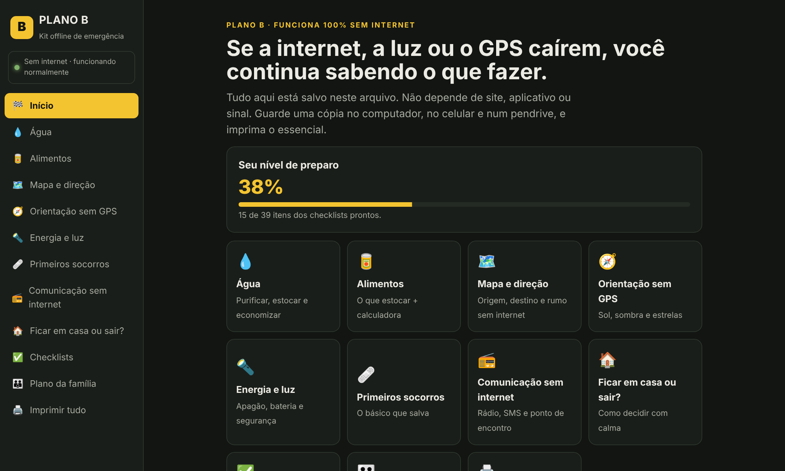
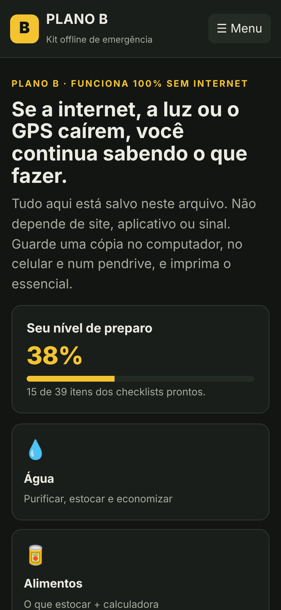

BPLANO B5/8
Funcionando sem internet
O kit de emergência que funciona offline.

→
Sem mapa, sem Google, sem sinal. Você saberia o que fazer nas primeiras 72 horas?
Acontece todo ano no Brasil, e a Defesa Civil já orienta: tenha um kit para 72 horas. Quem já passou sabe que a primeira coisa que some é a informação. Como tratar a água? Para que lado ir?
Foi com essa ideia que a Hélice criou o Plano B.
Pagamento único · acesso para sempre · garantia de 7 dias
Link na bio →Sem aplicativo, sem cadastro, sem internet depois de baixar.


Água, comida, mapa e rumo sem GPS.
Tudo num arquivo que funciona offline.
Melhor ter e não precisar do que precisar e não ter.